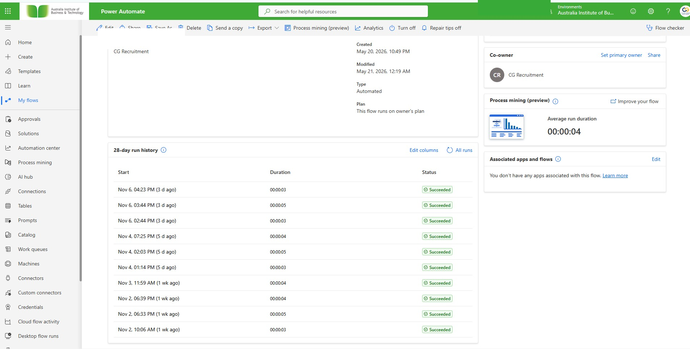
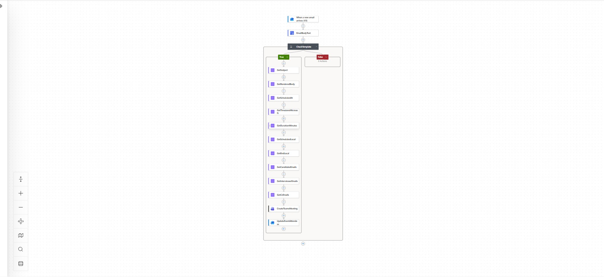

Conditional processing
The flow checks whether an incoming message matches the expected template. The visible true branch extracts scheduling and contact details; the false branch shown has no actions.
A Microsoft Power Automate workflow set that reduces repetitive recruitment coordination by connecting incoming email, candidate and interviewer details, calendar scheduling, Microsoft Teams meetings and follow-up communications.
Recruitment scheduling often requires someone to read an incoming email, identify the relevant interview template, extract the subject and message content, interpret scheduling details, coordinate candidate and interviewer addresses, create a calendar/Teams event and send communications. The supplied flow screenshots show these steps being orchestrated in Power Automate.
The flow checks whether an incoming message matches the expected template. The visible true branch extracts scheduling and contact details; the false branch shown has no actions.
The flow canvas shows a Teams meeting creation action followed by an event-attendee update. A related flow canvas shows event creation, an HTTP request inside an iteration and a subsequent email action.
The flow library lists a final-round document/interviewer event flow and a combined scheduling-plus-documents flow.
The flow library also lists resume download, resume forwarding to Gmail, HR candidate email automation and recording-link delivery to HR.
A scheduled flow is listed for daily interviewer notifications, indicating a recurring coordination task.
The supplied run-history view shows multiple successful runs for the interview scheduling flow and a displayed average run duration of four seconds in that snapshot.
The screenshots support hands-on work with Power Automate cloud flows, email-triggered orchestration, conditional logic, data extraction, Microsoft Teams meeting creation, event attendee updates and HTTP actions. The exact API payloads, connector configuration, failure/retry policy and production volumes are not visible in the supplied evidence and are therefore not claimed here.
The following redacted screenshots show the Power Automate execution history and the interview-scheduling flow structure.

